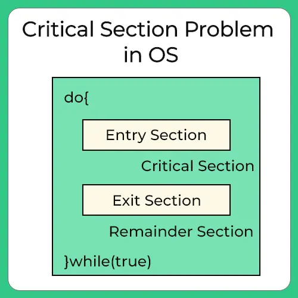

Pengertian dan Contoh dari Critical Section
Critical Section adalah bagian dari suatu proses yang akan melakukan akses dan manipulasi data ketika sebuah proses sedang dijalankan dalam critical section nya, tidak ada proses lain yang boleh dijalankan dalam critical section tersebut, karena akan menyebabkan keadaan mutually exclusive. Mutually exclusive yakni keadaan terjadinya akses resources yang sama di saat yang bersamaan mutually exclusive memerlukan kondisi tertentu agar dapat terpenuhi.
Critical section biasanya digunakan saat program multithreading, dimana program tersebut terdiri dari banyak thread, akan mengubah nilai dari variabel. Dalam hal ini critical sectiondiperlukan untuk melindungi variabel dari concurrent access (pengaksesan program di saat yang bersamaan) yang dapat membuat nilai dari variabel tersebut menjadi tidak konsisten.
Seperti yang telah kita ketahui bahwa proses dapat bekerja sendiri (independent process) dan juga dapat bekerja bersama proses-proses yang lain (cooperating process). Pada umumnya ketika proses saling bekerjasama (cooperating process) maka proses-proses tersebut akan saling berbagi data. Pada saat proses-proses berbagi data, ada kemungkinan bahwa data yang dibagi secara bersama itu akan menjadi tidak konsisten dikarenakan adanya kemungkinan proses-proses tersebut melakukan akses secara bersamaan yang menyebabkan data tersebut berubah, hal ini dikenal dengan istilah Race Condition.
Dibutuhkan solusi yang tepat untuk menghindari munculnya Race Condition. Solusi tersebut harus memenuhi ketiga syarat berikut:
- Mutual Exclusion: Jika proses pi sedang mengeksekusi critical section-nya maka tidak ada proses lain yang dapat mengeksekusi dalam critical section mereka.
- Progress: Jika tidak ada proses yang sedang dieksekusi dalam critical section dan ada beberapa proses yang ingin masuk ke critical section mereka, maka pemilihan proses yang akan masuk ke critical section berikutnya tidak bias ditunda.
- Bounded Waiting: Suatu keterikatan harus ada pada sejumlah proses yang diijinkan masuk ke critical section mereka, setelah adanya proses yang meminta masuk ke critical section dan sebelum permintaan itu diterima.
Critical Section mempunyai beberapa kode:
- Entry Section: kode yang digunakan untuk masuk ke dalam critical section
- Critical Section: Kode di mana hanya ada satu proses yang dapat dieksekusi pada satu waktu.
- Exit Section: akhir dari critical section, mengizinkan proses lain.
- Remainder Section: kode istirahat setelah masuk ke critical section.
Ada dua jenis solusi untuk memecahkan masalah critical section, yaitu:
- Solusi Perangkat Lunak: Solusi ini menggunakan algoritma-algoritma untuk mengatasi masalah critical section.
- Solusi Perangkat Keras: Solusi ini tergantung pada beberapa instruksi mesin tertentu, misalnya dengan me-non-aktifkan interupsi, mengunci suatu variabel tertentu atau menggunakan instruksi level mesin seperti tes dan set.
Berikut ini algoritma-algoritma yang digunakan untuk mengatasi masalah critical section:
-
Algoritma 1
Algoritma 1 memberikan giliran kepada setiap proses untuk memproses critical section-nya secara bergantian. Asumsi yang digunakan disini setiap proses secara bergantian memasuki critical section-nya.
Statement while(turn != 4) akan memeriksa apakah pada saat itu proses 4 mendapatkan turn, jika tidak maka proses 4 akan busy waiting(lihat kembali bahwa printah while diakhiri dengan “;”). Jika ternyata pada saat itu merupakan giliran proses 4 maka proses 4 akan mengerjakan critical section-nya. Sampai sini jelas terlihat bahwa mutex terpenuhi! Proses yang tidak mendapatkan turn tidak akan dapat mengerjakan critical section-nya dan turn hanya akan diberikan pada satu proses saja.
Setelah proses 4 selesai mengerjakan critical section maka turn diberikan pada proses lainnya (turn= j, j merupakan proses selanjutnya yang dapat mengerjakan critical section). Setelah turn-nya diberikan kepada proses lain, proses 4 akan mengerjakan remainder section. Disini jelas terlihat bahwa syarat bounded waiting jelas terpenuhi. Ingat asumsi yang digunakan dalam algoritma ini adalah setiap proses secar bergantian memasuki critical section-nya, jika pada saat itu proses 4 ternyata belum mau mengerjakan critical section-nya maka proses ke-j tidak akan mendapatkan kesempatan untuk mengerjakan critical section walau saat itu sebenarnya proses ke-j akan memasuki critical section. Artinya syarat progress tidak terpenuhi pada algoritma ini.
Pada semua contoh, i adalah proses yang sedang berjalan, j adalah proses yang lain. Pada contoh ini code.
Contoh
-
Shared variables
-
int turn
initially turn = 0
- turn = i, Pi can enter its critical section
-
int turn
-
Process Pi
do { while(turn!=1); critical section turn=j; remainder section } while(1); - Memenuhi mutual exclusion, tapi bukan progress.
-
Shared variables
-
Algoritma 2
Masalah yang terjadi pada algoritma 1 ialah ketika di entry section terdapat sebuah proses yang ingin masuk ke critical section, sementara di critical section sendiri tidak ada proses yang sedang berjalan, tetapi proses yang ada di entry section tadi tidak bisa masuk ke critical section. Hal ini terjadi karena giliran untuk memasuki critical section adalah giliran proses yg lain sementara proses tersebut masih berada di remainder section. Untuk mengatasi masalah ini maka dapat diatasi dengan merubah variabel trun pada algoritma pertama dengan array
Boolean flag [2];Elemen array diinisialisasi false. Jika flag[i] true, nilai tersebut menandakan bahwa Pi ready untuk memasuki critical section. Pada algoritma ini. hal pertama yang dilakukan ialah mengeset proses Pi dengan nilai True, ini menandakan bahwa Pi ready untuk masuk ke critical section. kemudian, Pi memeriksa apakah Pj tidak ready untuk memasukui critical section. Jika Pj ready, maka Pi menunggu sampai Pj keluar dari critical section (flag[j] bernilai false). Ketika keluar dari critcal section, Pi harus merubah nilai flag[i] menjadi false agar prores lain dapat memasuki critical section.
Contoh:
Pada algoritma ini, kriteria Mutual-exclusion terpenuhi, tetapi tidak memenuhi kriteria progress. Ilustrasinya seperti di bawah ini.T0 : Po set flag [0] = true
Dari ilustrasi diatas terlihat bahwa algoritma ini memungkinkan terjadinya nilai true untuk kedua proses, akibatnya tidak ada proses yang akan berhasil memasuki critical section.Jadi untuk algoritma 2 masih terdapat kelemahan, seperti yang terjadi di atas.
T1 : Po set flag [1] = trueFLAG untuk setiap proses yang memberi STATE:
Setiap proses memantau suatu flag yang mengindikasikan ia ingin memasuki critical section. Dia memeriksa flag poses lain dan tidak akan memasuki critical section bila ada proses lain yang sedang masuk.
Contoh
-
Shared variables
-
boolean flag[2]
initially flag [0] = flag [1] = false
- flag [i] = true Pi ready to enter its critical section
-
boolean flag[2]
-
Process Pi
do { flag[i]:=true; while(turn!=1) critical section; turn=j; remainder section } while(1); - Memenuhi mutual exclusion, tapi tidak memenuhi progess.
-
Shared variables
-
Algortima 3
Idenya berasal dari algoritma 1 dan 2. Algoritma 3 mengatasi kelemahan pada algoritma 1 dan 2 sehingga progres yang diperlukan untuk mengatasi critical section terpenuhi.
Algoritma 3 ditemukan oleh G.L. Petterson pada tahun 1981 dan dikenal juga sebagai Algoritma Petterson. Petterson menemukan cara yang sederhana untuk mengatur proses agar memenuhi mutual exclusion. Algoritma ini adalah solusi untuk memecahkan masalah critical section pada dua proses. Ide dari algoritma ini adalah menggabungkan variabel yang di- sharing pada Algoritma 1 dan Algoritma 2, yaitu variabel turn dan variabel flag. Sama seperti pada Algoritma 1 dan 2, variabel turn menunjukkan giliran proses mana yang diperbolehkan memasuki critical section dan variabel flag menunjukkan apakah suatu proses membutuhkan akses ke critical section atau tidak.
Awalnya flag untuk kedua proses diinisialisai bernilai false, yang artinya kedua proses tersebut tidak membutuhkan akses ke critical section. Kemudian jika suatu proses ingin memasuki critical section, ia akan mengubah flag-nya menjadi true (memberikan tanda bahwa ia butuh critical section) lalu proses tersebut memberikan turn kepada lawannya. Jika lawannya tidak menginginkan critical section (flag-nya false), maka proses tersebut dapat menggunakan critical section, dan setelah selesai menggunakan critical section ia akan mengubah flag-nya menjadi false. Tetapi apabila proses lawannya juga menginginkan critical section maka proses lawan-lah yang dapat memasuki critical section, dan proses tersebut harus menunggu sampai proses lawan menyelesaikan critical section dan mengubah flag-nya menjadi false.
Misalkan ketika P0 membutuhkan critical section, maka P0 akan mengubah flag[0] = true, lalu P0 mengubah turn= 1. Jika P1 mempunyai flag[1] = false, (berapapun nilai turn) maka P0 yang dapat mengakses critical section. Namun apabila P1 juga membutuhkan critical section, karena flag[1] = true dan turn= 1, maka P1 yang dapat memasuki critical section dan P0 harus menunggu sampai P1 menyelesaikan critical section dan mengubah flag[1] = false, setelah itu barulah P0 dapat mengakses critical section.
Bagaimana bila kedua proses membutuhkan critical section secara bersamaan? Proses mana yang dapat mengakses critical section terlebih dahulu? Apabila kedua proses (P0 dan P1) datang bersamaan, kedua proses akan menset masing-masing flag menjadi true (flag[0] = truedan flag[1] = true), dalam kondisi ini P0 dapat mengubah turn = 1 dan P1 juga dapat mengubah turn = 0. Proses yang dapat mengakses critical section terlebih dahulu adalah proses yang terlebih dahulu mengubah turn menjadi turn lawannya. Misalkan P0 terlebih dahulu mengubah turn= 1, lalu P1 akan mengubah turn= 0, karena turn yang terakhir adalah 0 maka P0-lah yang dapat mengakses critical section terlebih dahulu dan P1 harus menunggu.
Algoritma 3 memenuhi ketiga syarat yang dibutuhkan. Syarat progress dan bounded waitingyang tidak dipenuhi pada Algoritma 1 dan 2 dapat dipenuhi oleh algoritma ini karena ketika ada proses yang ingin mengakses critical section dan tidak ada yang menggunakan critical sectionmaka dapat dipastikan ada proses yang bisa menggunakan critical section, dan proses tidak perlu menunggu selamanya untuk dapat masuk ke critical section.
FLAG untuk meminta izin masuk:
- Setiap proses mengeset sebuah flag untuk meminta izin masuk. Lalu setiap proses mentoggle bit untuk mengizinkan yang lain untuk yang pertama
- Kode ini dijalankan untuk setiap proses i lain. Pada contoh ini code.
Contoh-
Shared variables
-
F boolean flag[2];
initially flag[0] = flag[1] = false
-
F flag[i] = true; Pi can enter its critical section
-
F boolean flag[2];
-
Shared variables
- Gabungan shared variables dari algorima 1 dan 2
-
Process Pi
do { while(turn!=1); critical section turn=j; remainder section } while(1); - Memenuhi ketiga persyaratan, memecahkan persoalan critical section untuk kedua proses
-
-
Algoritma Bakery
Critical Section untuk n buah proses:
Sebelum memasukkan proses ke critical section, proses menerima sebuah nomor. Pemegang nomor terkecil masuk ke critical section. Jika ada dua proses atau lebih menerima nomor sama, maka proses dengan indeks terkecil yang dilayani terlebih dahulu untuk masuk ke critical section. Skema penomoran selalu naik secara berurut contoh: 1, 2, 3, 3, 3, 3, 4, 5,...
Contohboolean choosing [n]; long long long int number [n]; /* 64 bit maybe okay for about 600 years */ Array structure elements are initiallized to false and 0 respectively while (true) { choosing[i] = true; number[i] = max(number[0], ... [n-1]) + 1; choosing[i] = false; for (j = 0; j < n; j ++) { while (choosing[j]) {} while ((number[j] !=0) && ((number[j], j) < (number[i], i))) {} } number[i] = 0 } Solves the critical-section problem for n process
References:
https://teknikkom15.blogspot.com/2012/04/critical-section.html
https://muhammdhadi8040170378.blogspot.com/p/critical-section-critical-section.html

Dinda Putri Ramadani
Hai!!! Perkenalkan saya Dinda Putri Ramadani salah satu mahasiswi dari Universitas Dinamika Bangsa Jambi. Blog ini untuk memenuhi tugas Sistem Operasi yang diberikan oleh dosen pembimbing saya. Terima Kasih!!! xixixi